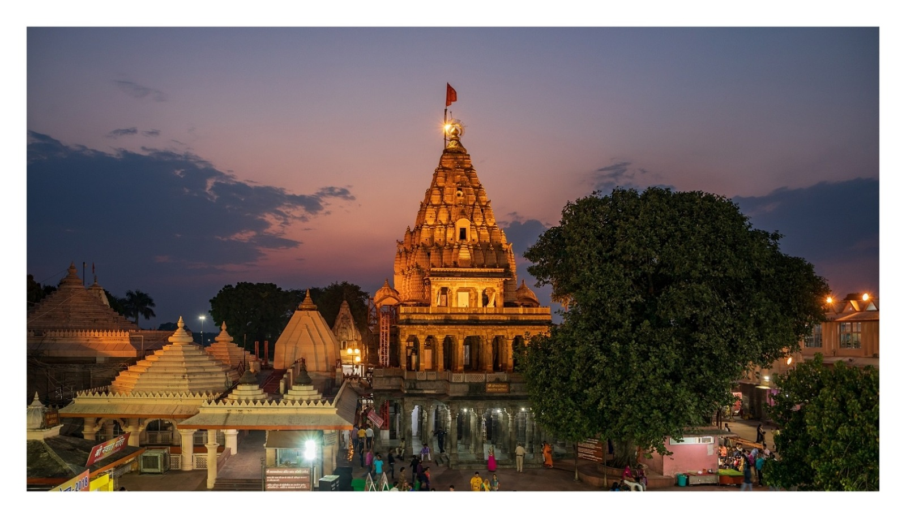
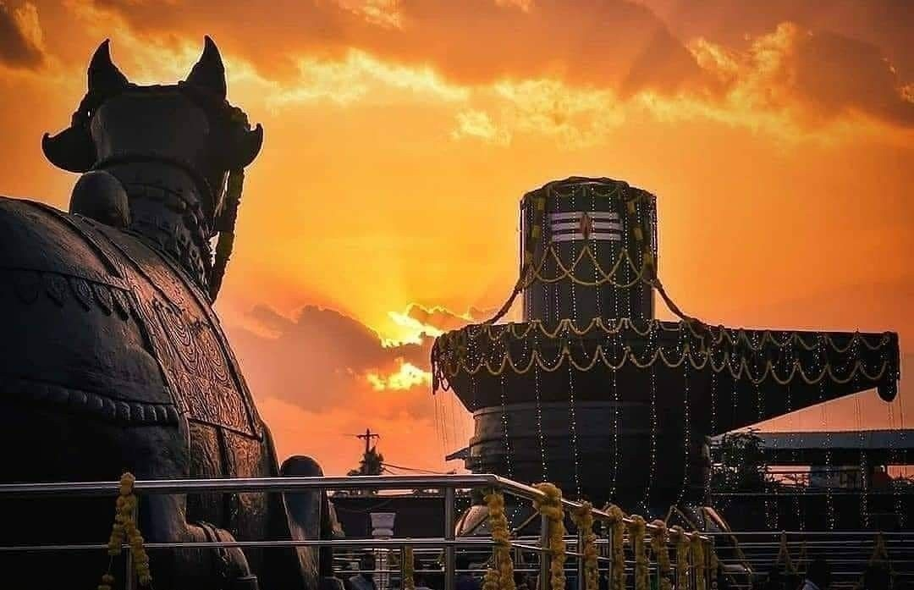
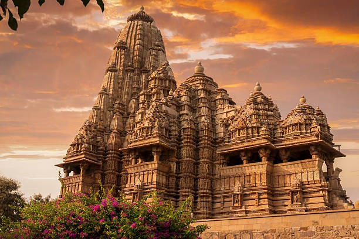
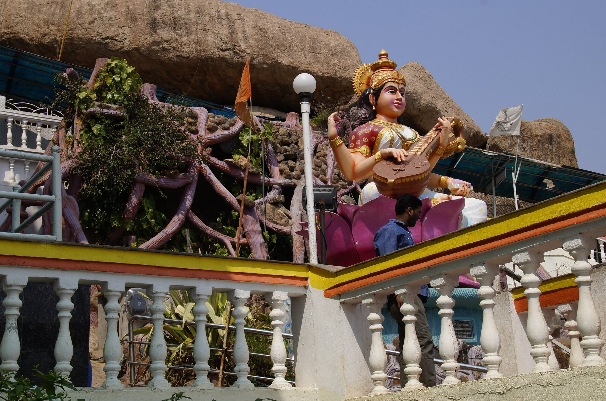

With cool temperatures and greater visibility than the previous few months, February is an ideal month to visit the main attractions of North India . February is also a great month to travel in. The northernmost regions are still cold, but not harsh, while the plains are the perfect blend of warm days and cool nights. Coastal regions aren't humid, and arid regions such as Rajasthan boast of breezy nights that will make travel extremely enjoyable.
18' February -- Maha Shivaratri
Maha Shivaratri is an important Hindu festival celebrated annually in honor of Lord Shiva, one of the principal deities of Hinduism. The festival is observed on the 14th night of the new moon in the Hindu month of Phalguna, which typically falls between February and March.
On Maha Shivaratri, devotees of Lord Shiva fast and offer prayers to the deity, seeking his blessings and protection. It is believed that on this day, Lord Shiva performs his divine dance, known as the Tandava, which is said to create, sustain, and destroy the universe.
Devotees observe a strict fast and abstain from food and water throughout the day. They also visit Shiva temples and perform special rituals, such as bathing the Shiva linga with milk, honey, and water, and offering flowers and fruits to the deity.
In some parts of India, particularly in North India, Maha Shivaratri is celebrated by keeping a vigil all night, singing devotional songs, and performing prayers and rituals. The night-long vigil is called 'jagaran', and it is believed to be a way of purifying the mind and body and achieving spiritual enlightenment.
Maha Shivaratri is a significant festival in Hinduism, and it is celebrated with great enthusiasm and devotion across India. It provides an opportunity for devotees to express their reverence for Lord Shiva and seek his blessings for a prosperous and peaceful life.

Mahakaleshwar Temple
Mahakaleshwar Temple is one of the most important Hindu temples dedicated to Lord Shiva, located in the city of Ujjain, in the Indian state of Madhya Pradesh. It is believed to be one of the twelve Jyotirlingas, which are considered to be the most sacred abodes of Lord Shiva.
During Maha Shivratri, the Mahakaleshwar Temple witnesses a huge rush of devotees who come to seek blessings of Lord Shiva. The temple is decorated with lights and flowers, and the atmosphere is filled with the sounds of devotional songs and chants of "Om Namah Shivaya".
Devotees perform various rituals, including bathing the Shiva Linga with holy water, milk, and honey, offering flowers and fruits to the deity, and lighting lamps and incense sticks. The temple priests perform special pujas and aarti throughout the day and night to honor Lord Shiva.
The festival provides an opportunity for visitors to witness the rich cultural heritage of India and experience the religious fervor of the region. The Mahakaleshwar Temple is a must-visit during Maha Shivratri for those who seek to experience the vibrant and colorful festivities of this iconic shrine.
Kotilingeshwar Temple
Kotilingeshwara Temple is a popular Hindu temple dedicated to Lord Shiva, located in the town of Kammasandra in the Kolar district of Karnataka, India. The temple is famous for its unique architecture and the presence of millions of Shiva Lingas (phallic symbols of Lord Shiva) in the temple complex.
During Maha Shivratri, the Kotilingeshwara Temple witnesses a huge influx of devotees who come to seek blessings from Lord Shiva. The temple complex is beautifully decorated with lights and flowers, and the atmosphere is filled with the sounds of devotional songs and chants of "Om Namah Shivaya".
Devotees offer prayers to Lord Shiva by performing special pujas and abhishekas (ritual bath) to the Shiva Linga. They also take part in the night-long vigil, where they chant mantras and sing devotional songs in praise of Lord Shiva.

14' February-- Basant Panchami
Basant Panchami is a Hindu festival that marks the arrival of spring in India. It is celebrated on the fifth day (Panchami) of the Hindu month of Magha (usually falls in late January or early February). The festival is dedicated to the goddess Saraswati, who is the goddess of knowledge, music, and arts.
On Basant Panchami, people wear yellow clothes and offer yellow flowers, sweets, and food to goddess Saraswati. Schools and colleges organize special puja (worship) of the goddess, and students seek her blessings for success in their studies.
In some parts of India, people also fly kites to celebrate the festival. Kite flying is a popular activity during Basant Panchami, and people of all ages participate in this fun-filled activity. It is believed that flying kites helps in awakening the gods and goddesses from their long winter sleep.
In Punjab, Basant Panchami is celebrated as a festival of harvest, and people prepare special dishes made from freshly harvested crops. The festival also marks the beginning of the preparation for the upcoming spring harvest season.

Khajuraho Temple
The Khajuraho temples are a group of Hindu and Jain temples located in the Chhatarpur district of Madhya Pradesh, India. They are known for their intricate and explicit carvings that depict various aspects of Indian art, culture, and mythology. Although there are no specific celebrations held at the Khajuraho temples during Basant Panchami, visitors can still witness the beauty and grandeur of the temples during this time of the year.
As Basant Panchami marks the arrival of spring, it is a great time to visit the Khajuraho temples and explore the beautiful sculptures and architecture amidst the blooming flowers and lush greenery. The temples are open for visitors throughout the year, and there are guided tours available that provide insights into the history, architecture, and significance of the temples.
During Basant Panchami, many tourists visit the Khajuraho temples to witness the breathtaking beauty of the temples and the surrounding landscape. The temples are lit up at night, providing a magical and mystical atmosphere for visitors.
Sri Vidya Saraswathi Shaneeshwara Temples, Wargal
The Saraswati Temple situated on a hillock at Wargal village in Siddipet District of Telangana is the most famous Saraswati temple in the state after Basara. This temple is famous for Aksharaabyasa for children. It is one of the popular pilgrimage sites around Siddipet & Hyderabad.
The Wargal Saraswati Temple is one among the few temples of goddess Saraswati in Telangana. Also known as Sri Vidya Saraswati Temple, it was built by Sri Yamavaram Chandrashekhara Sharma. The temple foundation stone was laid in 1989. On 1992 Sri Vidya Nrusinha Bharati Swamy has laid the foundation to the statues of Goddess Sri Vidya Saraswathi Devi and Lord Shani. Now it is maintained by Kanchi Mutt.

9' February-- Mauni Amavasya
Mauni Amavasya, the word Mauni means silence, on this day any person remains silent all day and this is a kind of fast. Which is done on the day of Mauni Amavasya. Mauni Amavasya is considered the most important and auspicious day in the Hindu calendar. It is believed that on this day the water of the holy Ganges River turns into nectar and taking a bath in the Ganges on the day of Mauni Amavasya is considered holy. It is said that the creator of the universe, Manu, was also born on this new moon day. Amavasya is the most important festival of Magh month. According to Hindu religion, Mauni Amavasya falls in the middle of the month of Magha and is also called Maghi Amavasya. In Hinduism, the month of Magha is considered auspicious because Dwapara Yuga started on this day. By the way, bathing the Ganges in the whole months of Magha is considered auspicious, but bathing on the day of Mauni Amavasya is considered special and holy .
Har ki Pauri
Har Ki Pauri, meaning the feet of Lord Vishnu (Hari),is a ghat on the banks of the river Ganga and landmark of the Hindu holy city of Haridwar in the Indian state of Uttarakhand.It is believed that it is the precise spot where the Ganga leaves the mountains and enters the plains. The ghat is on the west bank of Ganga canal through which the Ganga is diverted just to the north. Har Ki Pauri is also the area where thousands of pilgrims converge and the festivities commence during the Kumbha Mela, which takes place every twelve years, and the Ardh Kumbh Mela, which takes place every six years and the Punjabi festival of Vaisakhi, a harvest festival occurring every year in the month of April.Literally, "Har" means "God", "Ki" means " 's " and "Pauri" means "steps". Lord Vishnu is believed to have visited the Brahmakund in Har Ki Pauri in the Vedic times.